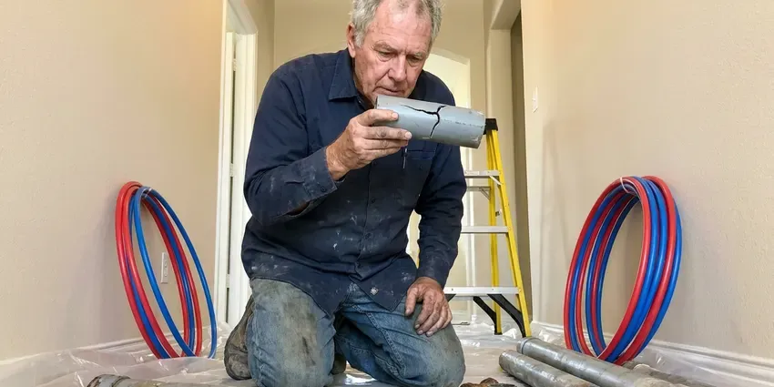

Tankless Water Heater Replacement in Binghamton, NY
For efficient tankless water heater replacement in Binghamton, NY, trust HCL Plumbing. We ensure your home has consistent hot water.
- Experienced, Licensed Plumbers
- Prompt Tankless Replacement
- Manufacturer Warranty Registration
- Expert Plumbers

Get Your New Tankless Water Heater Installed in Binghamton, NY.
Contact HCL Plumbing today for a free estimate on your tankless water heater replacement.
Your Trusted Source for Tankless Water Heater Replacement in Binghamton, NY
HCL Plumbing handles every part of a tankless swap, including removing the old unit, upgrading the gas line if needed, installing new concentric or PVC venting and adding service valves for annual flushing. You get a clean, code-compliant install and a walkthrough of how to keep the heat exchanger in good shape.
Our expertise includes:
- Precise sizing and installation of new tankless units.
- Clean integration with existing plumbing and gas lines.
- Safe gas and electric line connections for new units.

Additional Plumbing Replacement Services in Binghamton, NY
When repairs are no longer enough, our replacement services in Binghamton, NY deliver durable upgrades that restore full performance.


Customers
Why Choose HCL Plumbing for Tankless Water Heater Replacement in Binghamton, NY?
Choosing the right plumbing partner for your tankless water heater replacement is key for long-term performance and peace of mind. We bring years of experience directly with these advanced systems.
- Right-Sized Units, We calculate gallons per minute and temperature rise for your fixtures instead of estimating from square footage.
- Scale Protection, Every install includes isolation valves so the heat exchanger can be descaled without cutting into the pipes.
- Increased Lifespan, Modern tankless water heaters often last twice as long as conventional tank models, offering a better long-term investment.
Citywide Coverage
We understand the demands of Binghamton homes and are equipped to handle tankless water heater replacements efficiently. Residents across the whole area have access to our expert plumbing services.
Experienced Team
Our team of licensed plumbers has broad experience with all major tankless water heater brands and models. They complete ongoing training to stay current on installation techniques and safety protocols for this specialized equipment.
Safety-First Approach
We perform thorough safety checks after every tankless water heater replacement, including leak detection for gas lines and proper ventilation. You can rest assured your new system is safe and compliant with New York regulations.
Trusted Certified Binghamton Plumbing Services Professionals
At HCL Plumbing, we take pride in providing certified plumbing services throughout Binghamton, NY. Backed by leading industry credentials, our experienced plumbers combine technical skill with genuine customer care. Whether it is repair, installation, or maintenance, we follow strict safety and quality standards to deliver lasting results you can trust.
Call Us Now PHCC Plumbing Contractor Recognition
PHCC Plumbing Contractor Recognition Better Business Bureau (BBB) Accreditation
Better Business Bureau (BBB) Accreditation Angi Certified Pro
Angi Certified Pro ISO 9001 Quality Management Certification
ISO 9001 Quality Management CertificationProfessional Tankless Water Heater Replacement Services in Binghamton, NY
Tankless vs. Tank Water Heater Replacement Cost in Binghamton, NY
When considering tankless water heater replacement in Binghamton, NY, it is natural to compare costs. While the initial installation of a tankless unit can be higher than a traditional tank, the long-term energy savings and longer lifespan often make it the more cost-effective choice. We provide honest, upfront pricing for both options. That helps you make an informed decision based on your budget and hot water needs, with no surprises.

Rinnai Tankless Water Heater Replacement in Binghamton
Rinnai is a leading brand in the tankless water heater market, known for its quality and engineering. If your Rinnai unit is aging or malfunctioning, HCL Plumbing provides expert Rinnai tankless water heater replacement in Binghamton. We make sure your new Rinnai unit is installed correctly, extending its efficiency and lifespan. Our technicians are familiar with the installation requirements and venting options for Rinnai models, so the upgrade goes smoothly.
Emergency Tankless Water Heater Replacement in Binghamton
A sudden tankless water heater failure can leave your Binghamton home without hot water, which is a serious inconvenience. HCL Plumbing offers emergency tankless water heater replacement to restore your hot water quickly. We put a priority on urgent situations, working to diagnose the issue and, if replacement is necessary, get a new unit installed as soon as possible. Our goal is to cut down your downtime and get your home back to normal with reliable hot water.
Like-for-Like Tankless Swaps in Binghamton
When your existing tankless has a cracked heat exchanger or a failed control board that is not worth repairing, a direct replacement is often the fastest fix. We match the new unit to your current gas line, venting type and mounting location whenever possible. Many Rinnai and Navien models share similar footprints, which keeps wall patching to a minimum. We also replace the old service valves if they are corroded or seized. Most like-for-like swaps are finished in four to six hours.
Emergency Tankless Replacement in Binghamton, NY
A tankless heater that leaks from the heat exchanger or refuses to ignite can leave you with no hot water at all. We offer same-day emergency replacement for common models and can usually get a unit installed the day you call. If your exact model is not in stock, we can sometimes do a temporary repair to restore hot water while the replacement ships. We shut off gas and water to stop any leak as soon as we arrive. Call (716) 396-7101 any time your tankless quits.
Commercial Tankless Water Heater Replacement in Binghamton, NY
Businesses in Binghamton, NY often need robust hot water solutions, and tankless systems can provide the efficiency and capacity needed. We specialize in replacing commercial tankless units for restaurants, offices and other facilities with minimal disruption to your operations. Our plumbers are skilled with high-capacity models and complex plumbing layouts. We deliver a steady hot water supply that meets your business's demands and health code requirements.
Navien Tankless Water Heater Replacement in Binghamton, NY
Navien tankless water heaters are popular for their condensing technology, offering high efficiency and performance. When it is time for a Navien tankless water heater replacement in Binghamton, NY, you can count on HCL Plumbing. We have broad experience with Navien's advanced systems, including their combination boiler and water heater units. Our installation process focuses on optimizing your new Navien's performance, so you benefit from its energy-saving features and reliable hot water output.

Residential Tankless Water Heater Replacement in Binghamton
For homeowners in Binghamton, upgrading to a tankless water heater offers significant benefits like endless hot water and reduced energy use. We assess your household's hot water demand to recommend the ideal sized unit, so you get strong performance. Our team handles everything from safely disconnecting your old unit to installing the new tankless system. That includes all necessary gas and water line adjustments and venting changes to meet current codes.
Tankless Water Heater Replacement Near Me in Binghamton, NY
If you are searching for tankless water heater replacement near me in Binghamton, NY, HCL Plumbing is your local expert. Our service area covers the entire region, so a professional plumber is always close by when you need a new, efficient hot water solution. We are known for quick response times and reliable service for all tankless installations.
Local service matters because tankless problems often show up during the busiest part of your day. Our techs are close by and can diagnose whether a repair or replacement makes more sense. We back every replacement with solid labor coverage and register your manufacturer warranty for you.
HCL Plumbing at a Glance
- Licensed and insured plumbers serving Binghamton, NY
- 24/7 emergency service with same-day scheduling
- Clear written estimates, no hidden fees
- 4.8-star rated by 520+ New York customers
Binghamton Map
Binghamton Information
- Population
- 46,727
- Area codes
- 607/762/585
- Service area
- Binghamton and communities within 40 miles
- Nearby
- Syracuse, Utica, Poughkeepsie, Schenectady
Replacing your tankless water heater in Binghamton, NY is a smart investment, especially with seasonal temperature swings and the demand for efficient hot water in modern homes.
Expert Services
Trust our professionals for reliable HCL Plumbing solutions in Binghamton, NY.
Our Specialized Plumbing Services in Binghamton, NY
At HCL Plumbing, we provide a complete range of plumbing services across Binghamton, NY. From leak detection to full system installations, our team ensures fast, precise, and affordable service for both residential and commercial properties. Explore our core services below:


How Our Tankless Water Heater Replacement Process Works in Binghamton, NY
We make sure every step, from first consultation to final installation, is handled with professionalism and care.
Request a Quote
Contact HCL Plumbing today at (716) 396-7101 to schedule an on-site evaluation for your tankless water heater replacement. Our team will discuss your hot water needs and provide a clear, transparent estimate.
Unit Selection
Based on your home's demands and existing setup, we will help you choose the ideal tankless water heater model. We consider factors like fuel type, flow rate and energy efficiency.
Expert Installation
Our licensed plumbers will expertly remove your old unit and install the new tankless water heater. We make sure all gas, water and vent connections meet New York code requirements for safety and performance.
Frequently Asked Questions About Tankless Water Heater Replacement in Binghamton
The cost of tankless water heater replacement in Binghamton, NY usually ranges from $3,000 to $6,000, depending on the unit's capacity, brand, complexity of installation, such as converting from a tank model, and any necessary electrical or gas line upgrades. This price usually includes the unit itself and labor. We provide a detailed, upfront quote after a thorough assessment of your home.
With proper installation and regular maintenance, a new tankless water heater usually lasts 20 to 25 years. This is significantly longer than traditional tank water heaters, which usually last 10 to 15 years. Regular flushing and descaling can help extend the life of your tankless unit, especially in hard water areas.
Common signs that your tankless water heater needs replacement include frequent error codes, inconsistent water temperature, reduced hot water flow or a complete lack of hot water. If your unit is over 15 to 20 years old and repairs are becoming common and costly, replacement is often the more sensible choice.
To protect the life and efficiency of your new tankless water heater, regular maintenance is key, especially in areas with hard water. This typically involves annual flushing to remove mineral buildup, checking the air filter, and inspecting gas and water connections. HCL Plumbing offers maintenance plans to help keep your unit in top condition.
Well-maintained tankless units can last 15 to 20 years. In hard water areas without regular descaling, heat exchangers can fail much sooner. Annual flushing makes the largest difference.
Most manufacturers offer 10 to 15 years on the heat exchanger and about 5 years on parts for residential use. We add our own labor warranty and register the unit on your behalf.
Often yes, especially when converting from a tank. Many tankless units need three quarter inch gas pipe and a meter that can handle 199,000 BTU on top of your furnace, range and dryer.
To prepare for tankless water heater replacement, make sure the area around your existing unit is clear and accessible for our plumbers. If possible, clear a path to the installation site and keep pets or children safely out of the work area. We will handle draining the old unit and all other technical preparations.
What People Are Saying About Our Plumbing Experts?

Patricia H.
We had a slab leak that two other companies could not find. HCL Plumbing located it in under an hour, explained our options, and the price matched the quote to the dollar.
Slab Leak Repair · Utica, NY
Mark T.
When our office needed drain cleaning, HCL Plumbing provided quick, reliable service. The plumber arrived on time and made sure every drain flowed perfectly before leaving. Very satisfied.
Drain Cleaning · Utica, NY
Laura S.
I scheduled a water heater replacement, and the team made the process smooth and affordable. The new unit works perfectly, and they cleaned up after completing the job.
Water Heater Replacement · Rochester, NYSofia M.
Two new toilets installed in one visit, no mess left behind, and the tech even adjusted a faucet he noticed was dripping. Fair pricing and really friendly.
Toilet Installation · Syracuse, NY
Emily R.
I called HCL Plumbing for plumbing repair, and the technician was fast, polite, and thorough. They explained the problem clearly and fixed it the same day. I will definitely hire them again. Highly recommended!
Plumbing Repair · Binghamton, NY
Robert G.
The trenchless sewer replacement saved our front yard. They walked us through the camera inspection footage first so we knew exactly what we were paying for.
Sewer Line Replacement · Binghamton, NY